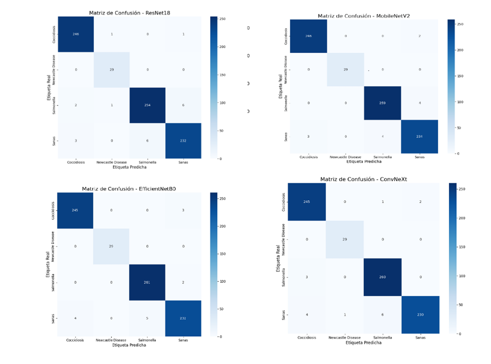
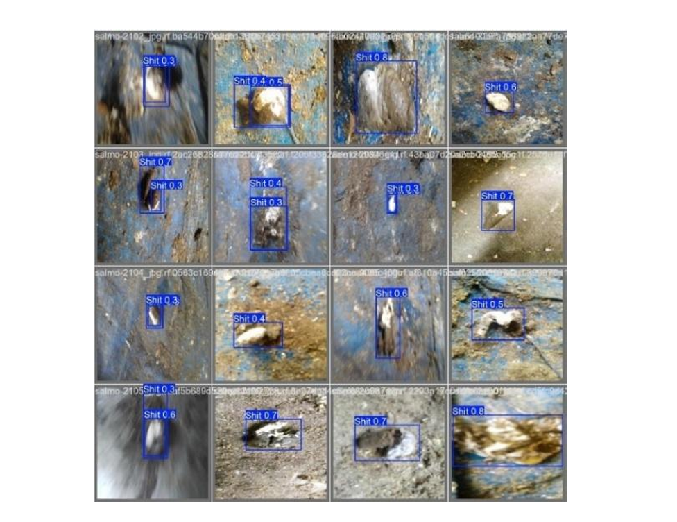
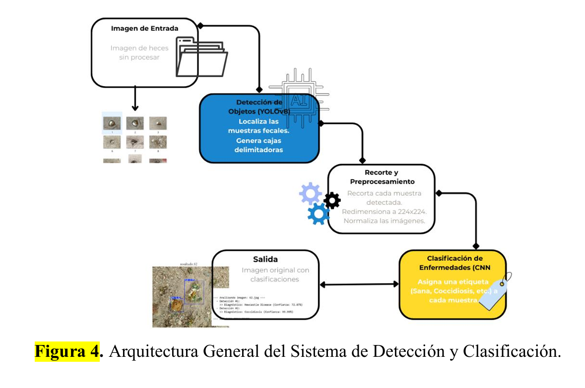

IA: Detección de Enfermedades Avícolas
Redes Neuronales Convolucionales (CNN) y Visión Computacional
1. Resumen Técnico
| Rol | Data Scientist & Investigador (Proyecto de Tesis de Maestría). |
| Stack Core | Python, PyTorch, Keras, OpenCV. |
| Modelos de IA | YOLOv8n (Localización) y MobileNetV2 (Clasificación). |
| Patologías Evaluadas | Coccidiosis, Newcastle Disease, Salmonelosis. |
| Métrica Principal | Exactitud (Accuracy) de Clasificación del 98.34%. |
| Infraestructura | Entrenamiento en GPU NVIDIA Tesla T4 (Google Colab). |
2. Planteamiento y Arquitectura del Sistema
- El Problema (Múltiples Instancias): Los métodos tradicionales (RT-PCR) son costosos y de alta latencia. Por otro lado, los clasificadores simples fallaban en entornos reales de granja porque una sola imagen puede contener múltiples muestras fecales mezcladas con fondos ruidosos (tierra, cascarilla de arroz).
- Arquitectura de Dos Etapas: Para solucionar esto, diseñé un pipeline secuencial. Primero, el detector YOLOv8n escanea la imagen completa y genera cajas delimitadoras para aislar cada muestra fecal. Luego, la imagen recortada se redimensiona y se pasa a la red convolucional para su diagnóstico individual.
- Selección de CNN: Se entrenaron y evaluaron comparativamente arquitecturas como ResNet18, EfficientNetB0, ConvNeXt y MobileNetV2. Se eligió MobileNetV2 como el modelo óptimo al lograr la máxima precisión y el menor tiempo de inferencia (92ms por imagen), siendo ideal para un futuro despliegue on-device (dispositivos móviles).
3. Entrenamiento y Resultados Visuales
El modelo fue entrenado con un dataset híbrido de miles de imágenes, aplicando técnicas de aumento de datos y Sobremuestreo Aleatorio (Random Oversampling) para balancear las clases.

Gráficas de Entrenamiento y Matriz de Confusión

Detección y Cajas Delimitadoras (YOLOv8)

Arquitectura del Flujo de Procesamiento
4. Logros Científicos y Conclusiones
- Precisión Clínica: El clasificador CNN alcanzó un F1-Score de 0.986 y una exactitud del 98.34%, demostrando que la Inteligencia Artificial puede identificar patologías de forma temprana y no invasiva.
- Viabilidad Local: Se validó el sistema de extremo a extremo utilizando 200 imágenes de prueba tomadas directamente en granjas avícolas de Portoviejo (Ecuador), probando su resistencia a la oclusión y variaciones de luz (abismo de generalización).
- Eficiencia Computacional: Al pesar tan solo 9.1 MB, el modelo desarrollado sienta las bases para ser empaquetado en una aplicación móvil offline, permitiendo democratizar el acceso a la tecnología sanitaria a los productores de traspatio.